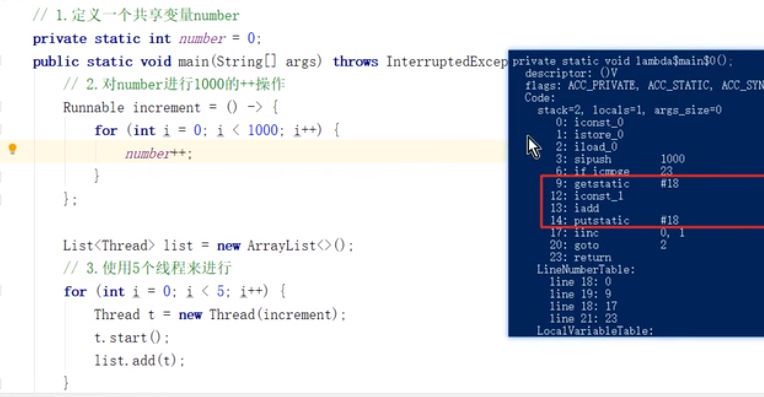

三个高并发问题
可见性问题
- 可见性是指当多个线程访问同一个变量时，一个线程修改了这个变量的值，其他线程能够立即看得到修改的值。
//线程1执行的代码
int i = 0;
i = 10;
//线程2执行的代码
j = i;
假若执行线程1的是CPU1，执行线程2的是CPU2。由上面的分析可知，当线程1执行 i =10这句时，会先把i的初始值加载到CPU1的高速缓存中，然后赋值为10，那么在CPU1的高速缓存当中i的值变为10了，却没有立即写入到主存当中。
此时线程2执行 j = i，它会先去主存读取i的值并加载到CPU2的缓存当中，注意此时内存当中i的值还是0，那么就会使得j的值为0，而不是10.
这就是可见性问题，线程1对变量i修改了之后，线程2没有立即看到线程1修改的值。
原子性问题
- 一个操作或多个操作，要么都执行，不会被打断，要么都不执行

number++不是原子操作，某一个线程改变了内存值之后，其他线程不一定知道改变，仍然读取了高速缓存中的旧值，计算后写入到内存，其实就相当一第一个线程的修改无效了
有序性问题
- java在编译和云心是会对代码进行优化，会导致程序最终的执行顺序不一定是编写代码时的顺序
重排的代码需要没有数据依赖关系
int a = 0; //语句1
int b = 1; //语句2
b= a; //语句3
a++; //语句4
语句1和语句2可能会被重排，语句三不会排到12前面，4也不会排到123前面
能够保证单线程的结果
但在多线程中可能会有问题
共享变量
int a = 0;
boolean flag = false
//线程1
num = 10;
flag = true;
//线程2
while(!flag){
}
int b = a*a;
当线程1被重排后，线程2跳出循环时获取的a的数值可能是错误的，计算得到的b可能是错的
Java内存模型（JMM）
计算机结构
- 5部分组成
输入设备、输出设备、输出设备存储器、控制器、运算器

运算器+控制器=》CPU - CPU
- 缓存

- 内存（内存条）
Java内存模型（JMM）
JMM的概念
- JMM是一套在多线程读写共享变量时，对数据的可见性、原子性、有序性的规则和保障
主内存：存放共享变量
线程工作内存：线程独有的内存，存放共享变量的副本
线程操作共享变量时：先把数据从主内存拷贝到线程工作内存，在工作内存进行修改，再把数据从工作内存拷贝到主内存

主内存和工作内存之间的交互
- 8个原子操作：Lock、Read、Load、Use、Assign、Store、Write、unLock

- 在没使用synchronized时不会用到lock和unlock
- 在使用lock时的特殊操作
- 如果对一个变量进行lock操作，将会清空工作内存中此变量的值
- 对一个变量进行unlock操作，必须先把此变量同步到主内存中
- 流程：Lock->Read->Load->Use->Assign->Store->Write->unLock